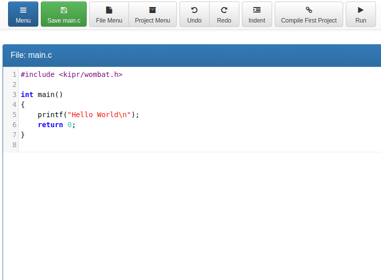
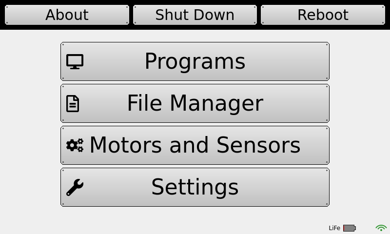
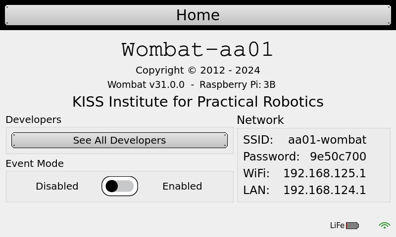
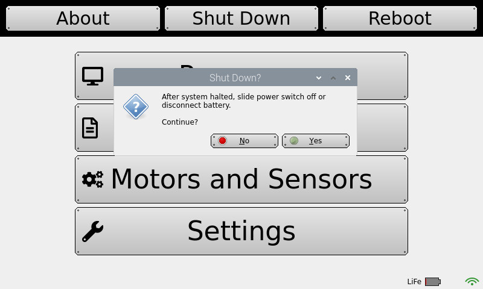
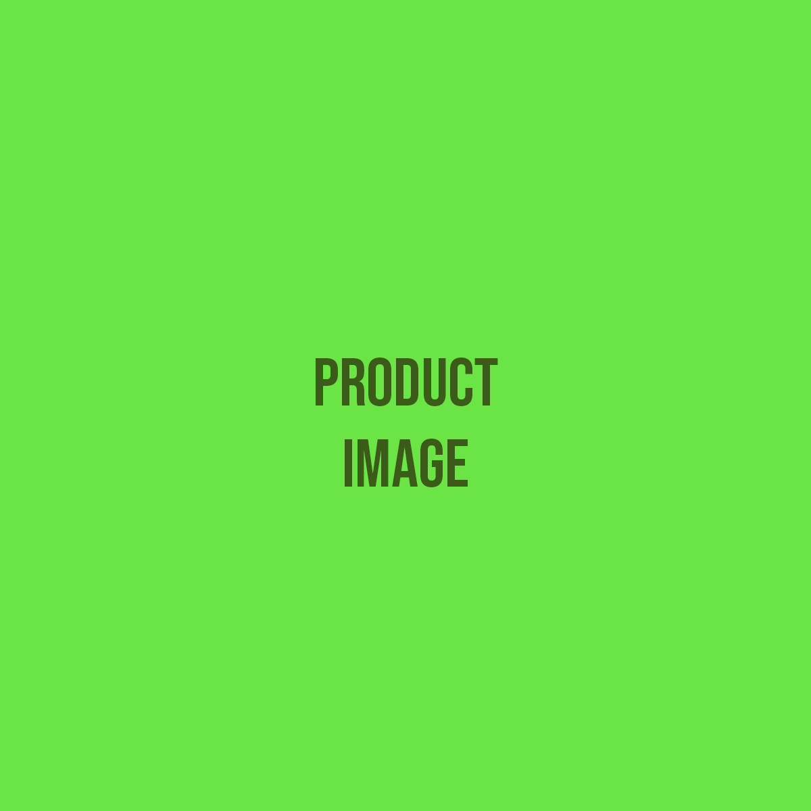

Discovery Projects · Coding · Project 1
Wake Up Your Wombat
Get your robot's brain powered on, connected, and running its first program.
Student PIN:
Try It Meet the Machine
Before you turn anything on, look closely at your controller. It is a small computer, and it is about to become the brain of your robot.
Find each part below. Check the box when you have found it.
⚠ You Are In Charge of This Battery
The battery can be ruined permanently if it is treated badly. These rules are not suggestions.
- Use only the charger that came with your controller.
- Never leave a battery charging unattended.
- Charge in a cool, open space — away from anything that can burn.
- When you are finished for the day: turn the Wombat off, then unplug the battery.
If you leave the battery plugged in and the Wombat switched on, the battery will drain so far that it can never be charged again.
Why do you think leaving the battery plugged in overnight would be worse than leaving a phone plugged in overnight?
Learn It How You Talk to a Robot
You will not write your programs on the Wombat itself. You will write them on your own computer, in a web browser such as Chrome, Edge, or Safari — and then send them over to the Wombat.
For that to work, your computer and the Wombat have to be on the same network. So the Wombat makes its own.
The Big Idea
Your Wombat creates its own small Wi-Fi network, like a tiny hotspot. Your computer joins that network. Then your browser can reach the Wombat's programming tools.
Two numbers you will need
Every device on a network has an IP ADDRESS. Think of it as a building address — it tells your browser which machine to talk to.
But a single machine can run many different services at once. So you also need a port number — think of it as which door to knock on. For the Wombat's programming tools, that door is always 8888.
You put them together with a colon between them, like this:
192.168.125.1:8888 ↑ ↑ which machine which door
The Wombat makes its own network, and on that network its address is usually the same on every robot — it is the port that never changes at all. Check yours anyway and write it down; if your Wombat is joined to a school network instead, the address will be different.
What you will see
Once you get there, you will be looking at the IDE — the place where you write code, check it, and send it to the robot.
In your own words: what is the difference between an IP ADDRESS and a port number?
Do It Get Connected
Work through these in order. Check each one off as you finish it.
-
Power on

Use only the power supply that came with your controller. Flip the black power switch on the side of the Wombat. Wait for the home screen to appear.
-
Find your network information
On the Wombat's screen, tap About. Look for the rows labeled SSID, Password, and Wi-Fi. Write them on your card below — you will need them every time.
If the Wi-Fi line is blank
This is a known problem on older Wombat software. The real fix is to update the Wombat (instructions are at kipr.org). The quick fix:
- Set Event Mode to Enabled.
- Go back to the Home Screen. Wait at least 5 seconds. Return to About.
- Set Event Mode back to Disabled.
- Go Home again, wait 5 seconds, return to About. Numbers should now appear.
-
Write down your Wombat's information
My Wombat CardNetwork name (SSID)PasswordWi-Fi IP ADDRESSFull web address
Keep this card. Every project after this one starts by connecting the same way.
-
Join the Wombat's network
Open the Wi-Fi settings on your computer. Find the network name from your card, select it, and enter the password.
This warning is normal
You will probably see something like "no internet connection" or "connected with limited access." Nothing is wrong. The Wombat is not the internet — it is just a robot. Keep going.
-
Open the programming tools

The KIPR Software Suite. Click KISS IDE. Open a web browser. In the address bar, type the full web address from your card — the IP address, a colon, then
8888. Match the punctuation exactly.You should land on the KIPR Software Suite. Click KISS IDE.
-
Make your own folder

Project Explorer — click + to add a user. 
Type your name, then Create. In Project Explorer, click the + to add a user. Type your name. Click Create.
⚠ Naming rules — these matter
No periods. No apostrophes. No exclamation points. No emojis. No symbols of any kind. Letters, numbers, and plain spaces only.
Good:
sarah folder·Botguy folder·First Project
Bad:m.j.c.·my amazing project!·Mrs Davis's project·:)A bad name will not fail right away. It will break something later, and it will be hard to find.
Do not use the default user folder. Make your own.
-
Add a project

Pick your folder, then + Add Project. 
Give the project a descriptive name. Go back to Project Explorer and pick your folder from the drop down. Click + Add Project.
Name it
First Project. Leave the language set to C and the source file name asmain.c. Click Create.Add these to your Wombat CardMy user folder nameMy project nameYou will need both of these in a moment, when you go to the robot to run your program.
-
Look around the editor

This is how every new project looks when you open it. Find each button before you use it.
Button What it does Menu Takes you back to the main menu of the Software Suite. Save main.c Saves your code. A successful compile also saves it for you. File Menu Delete or download main.cto your computer. One way to back up your work.Project Menu Delete or download the whole project. Undo / Redo Undo your last keystrokes, or put them back. Indent Cleans up the spacing so your code is readable. Use this often. Compile Turns your code into something the robot can actually run. Run Runs the program that was compiled. -
Compile it

"Compilation succeeded" — your project is now on the Wombat. There is already code in the editor. You did not write it and you do not need to understand it yet — that is Project 2. Press Compile.
Compile translates what you see into instructions the robot's processor can follow. If it works, your code is saved automatically. If it doesn't, you get a message telling you where the problem is.
-
Run it — on the robot

The Wombat's Home page — where you find Programs. 
The Wombat's About page. Pressing Run in the editor sends your program across and runs it, but the output comes back to your computer, in the console at the bottom of the browser. The Wombat's own screen stays whe`re it was.
To watch it run on the robot, go to the Wombat itself:
On the robot Do this 1 From the Home Screen, tap Programs. 2 Find your user folder, then find your project in the list. 3 Highlight the program in the list — tap it once so it is selected. 4 Press Run. Now watch the Wombat's screen. Two Different Run Buttons
The one in the editor is for checking your code quickly from your computer. The one on the Wombat is how the robot actually runs on its own — which is what it will be doing in a match, with nobody touching it.
What appeared on the Wombat's screen?
-
Shut down properly
Select Shutdown. 
Confirm when it asks. 
Wait for it to finish before the switch. Do not just flip the switch. Do it in this order:
- On the Home Screen, press Shutdown.
- Press Yes to confirm.
- Wait for it to finish, then flip the power switch off.
- Unplug the battery — hold the yellow connectors, never the wires.
Back Up Your Work
Code that only exists on the robot can disappear. Three ways to keep a copy:
- Copy the code out of the editor and paste it into a document.
- Download it from the File Menu or Project Menu.
- Plug a USB drive into the Wombat, then Settings → Backup → Backup.
To bring code back from a USB drive, use Settings → Backup → Restore.
Lost the Home Screen?
If the Wombat's screen ends up showing a desktop instead of the usual home screen, tap the Botguy icon in the top row to get back.
Score It Checkpoint
There is no field mission yet. Your score for this project is whether you can do the whole thing again without the sheet.
Can you do it again?
Trouble log
Something almost certainly went wrong. That is normal and it is worth writing down — you will hit the same thing again.
| What went wrong | How I fixed it |
|---|---|
Think about it
You pressed Run and the robot did something. Who decided what it would do — you, or the person who wrote the code that was already there?
Name one thing on this sheet you would tell a teammate to be careful about, and why.
Next
In Project 2 — Your First Program, you will open that same code and find out what every line of it actually means. Then you will change it and make it yours.
KIPR · Botball Explorer — Discovery Projects · © KISS Institute for Practical Robotics 1997–2026